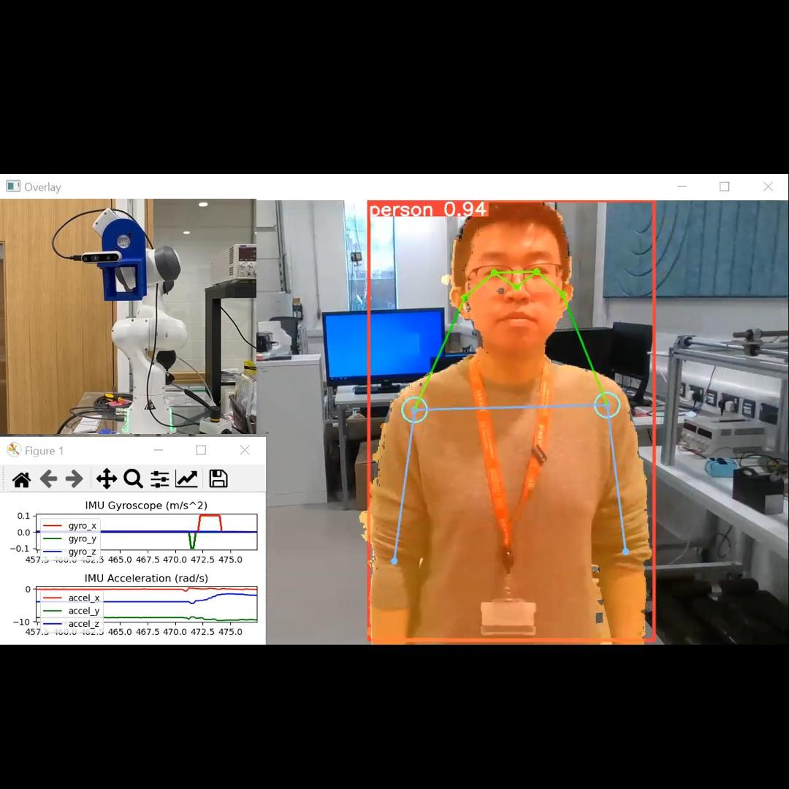
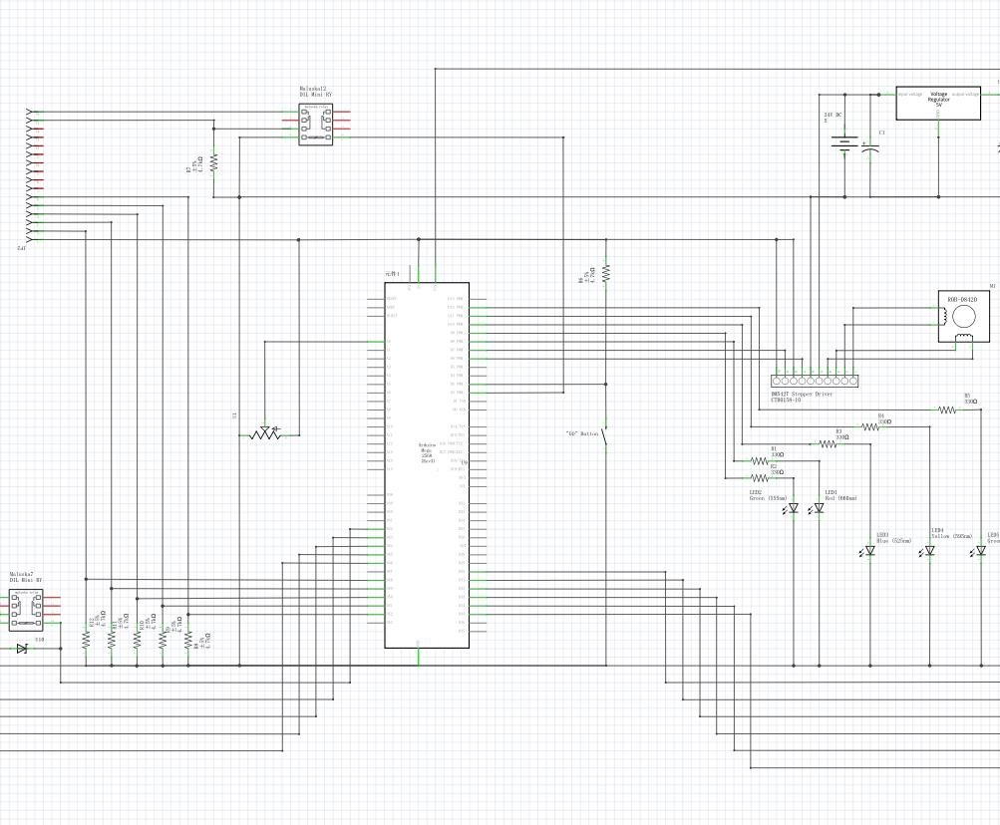
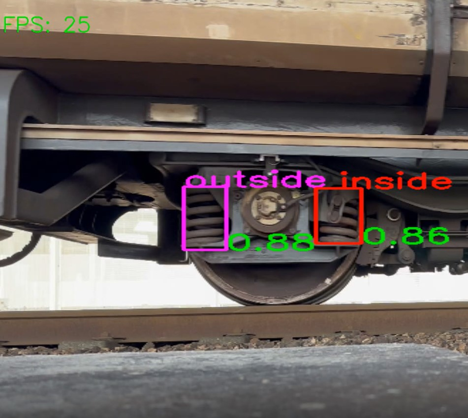
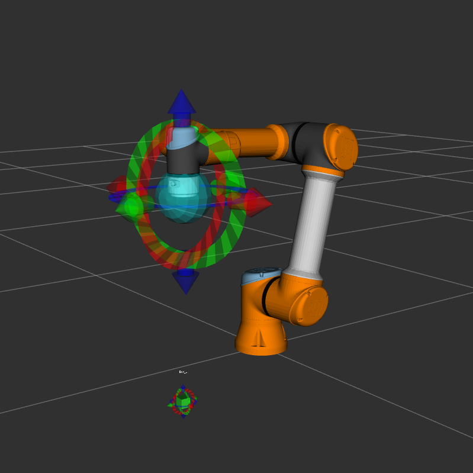
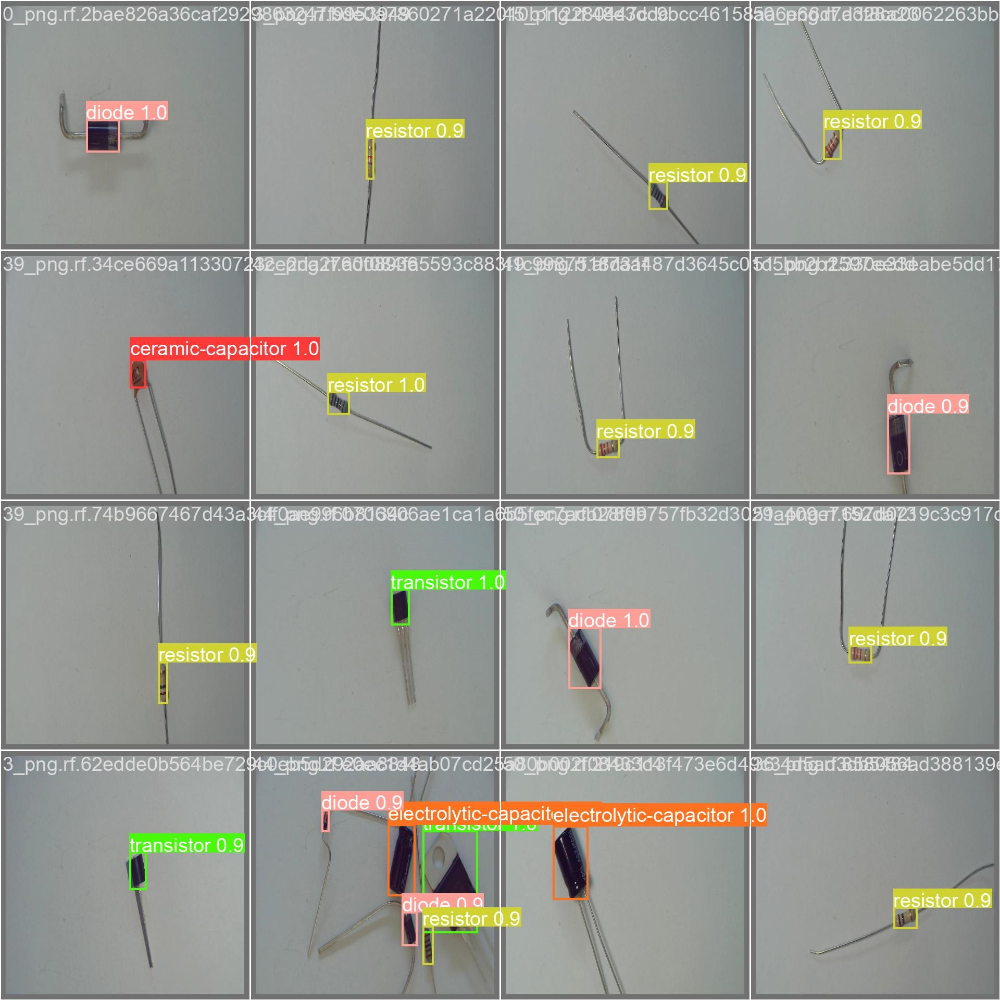
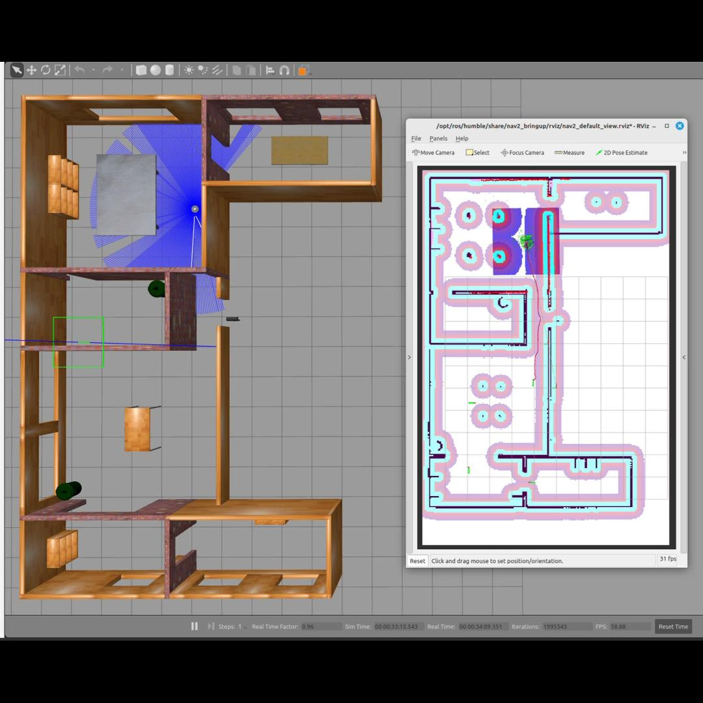

I am currently a Research Fellow in Engineering at University of Birmingham (UoB) and in charge of the Autonomous Systems Lab of UKRRIN,
where I focus on the R&D of intelligent sensing systems and machine learning solutions, particularly vision system and deep learning for computer vision, applied for machinery fault diagnosis, asset management, and generic automation tasks.
I did my PhD in Electronic, Electrical and Systems Engineering (EESE) at UoB, where I was supervised by Clive Roberts and Edward Stewart and funded by the BCRRE.
During my PhD,I developed two innovative laser scanners with dedicated deep learning algorithms for rapid 3D measuremnt and assessment of substantial objects, such
as railway tracks；Worked as a core member in multi-disciplinary teams for two industrial projects (S-CODE and High Speed Rail Monitoring) and one research project (RS Exchange);
Published research outcomes, outlined in more than 10 papers in various IEEE, IET, and IMechE journals.
And, is the only PhD graduate in Engineering of the Year 2022 to have passed the PhD viva with "no corrections".
Project Experience (Tap the pic to unleash the demo!)

Dynamic Robot Manipulation with Body Landmark Detection, Inertial Measurement, and Depth Sensing Jiaqi Ye,
Amir Hajiyavand 12-2023 to Present
In the field of robot manipulation, obtaining precise target coordinates in 3D space is imperative.
This project develops a real-time robot2point tracking system. In this specific example, the system utilizes
(1) a pre-trained deep learning model to recognize human landmarks (X, Y), (2) a depth camera to determine the distance to the target point (Z),
and (3) an IMU to maintain the camera pose in 3D space. Beyond robot manipulation, enhanced with various sensors,
the system supports human body analysis, 3D scanning and modeling, and more.

UR and Machine Vision Enhanced Manufacturing Line Automation Jiaqi Ye,
Amir Hajiyavand 08-2022 to 12-2023
This industrial project aims to seamlessly integrate a UR robot platform into a live machinery components manufacturing line,
replacing a human operator to carry out repetitive quality inspection processes. The design consists of three modules:
(1) Vision Module: This module utilizes customized computer vision algorithms to track and locate the targeted machine on the manufacturing line;
(2) Central PLC Module: The Programmable Logic Controller(PLC) module reads information from the Vision Module and other PLCs on the
manufacturing line, sending commands accordingly to the robot;
(3) Robot Platform: The robot platform receives commands from the PLC and carries out corresponding inspection processes.

Deep Learning based Track-side Vision System for EuroTunnel Jiaqi Ye,
Edward Stewart 07-2023 to Present
This project addresses a critical need by developing an innovative automatic vision system for the Eurotunnel (Folkestone - Calais).
At its core, this system is designed to inspect the status of crucial load wagon components before the loading process.
The importance of such a system lies in its potential to enhance safety, operational efficiency, and cost-effectiveness along this vital freight train route.
Our approach leverages a customized YOLO series model, tailored to the unique demands of the Eurotunnel environment. The development of the system holds the promise of significantly improving the normal operation of freight trains along this route.
Proposed a customized U-Net model, which allows you to process point cloud data in an
end-to-end manner for tasks such as 3D surface defect detection and reconstruction. Main innovations:
(1) Customized deep semantic network based on the U-Net structure (2) Transfer learning (3) Establishment of point cloud datasets
Developed a six-degrees-of-freedom portable scanner, integrating a laser triangulation sensor, an HD camera,
and an inertial measurement unit (IMU), for high-precision object profile measurement. Main innovations:
(1) Multi-sensor fusion and miniaturisation (2) High-precision point cloud data registration
Developed a novel 3D perceptual system, based on a low-cost 2D laser sensor,
for the fast characterization and assessment of object surface conditions such as surface defects and roughness.
Main innovations:
(1)Low-cost strategy for conducting 3D measurement using 2D scanners (2)Dedicated pipeline for high-precision 3D reconstruction of large object
Designed and deployed a vision-based 24-hr remote condition monitoring system for a reciprocating
device (Switch rail) in the high-speed railway. Main contributions: (1) Embedded vision system for the working environment (2)Dedicated algorithms for reliable detection and tracking of the object in varying lighting conditions
(1)Created my app GUI using streamlit; (2)Uploaded to a github repo for versioning control; (3)Dployed my app to streamlit cloud as the host (could use other platforms like Azure Container Apps).
In progress ... to find a proper free LLM API...to containrise the app using Docker for easier deployment.

Deep Mapping-Based Robot Control Jiaqi Ye
In progress ...
Using a custmoised deep learning model to dynamically generate robotic arm trajectories from object poses, enabling real-time adaptation to changing environments and complex motions (e.g. fast tracking, fast pick and place).
(1)Deep Learning,(2)CNN and LSTM, and (2)Robotics

YOLOV8-based electronic components detection and decoding platform Jiaqi Ye project page
/
reference
A fast electronic components detection and deoding (resistance) platform developed to benefit UoB EESE students on their final year projects by facilitating
circuit board developement processes, based on:
(1) A pipeline running two custom trained YOLOV8 models (2)PyTorch-GPU with increased processing speeds

Robot Localisation and Mapping Jiaqi Ye
Mobile robot navigation using:
(1) SLAM and (2)Probabilistic Localisation